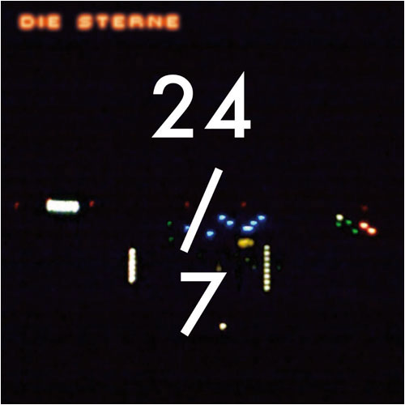

Wo ist hier?
Diese Webseite handelt von der Musikgruppe »Die Sterne«. Sie wird von Fans gemacht und ist unabhängig und inoffiziell.
02.01.2010 Mitte Dezember sind die Sterne in Hamburg bei den Konspirativen KüchenKonzerten aufgetreten. Die Aufzeichnung gibt es auf Youtube:
02.03.2010 In HD auf Youtube:

28.02.2010 Das neue Album kann unter anderem bei Amazon bestellt werden:
Reinhören ins neue Album auf MySpace oder diesterne.de
Anmerkung: Die Amazon-Links erhalten Affiliate-Kennungen, nämlich die offiziellen von den Sternen. Darüber unterstützt ihr die Sterne noch einmal zusätzlich! (Diese Fansite ist nichtkommerziell und enthält keine eigenen Affiliate-Links oder sonstige Werbung.)
28.01.2010 Die Sterne haben zum großen Schlag ausgeholt: Die offizielle Website wurde grundlegend überarbeitet. Anlass ist das Erscheinen des neuen Albums »24/7« am 26. Februar. Auf der Website kann in die neuen Songs bereits reingehört werden.
Die Tracklist von »24/7« ist wie folgt: Life in Quiz · Depressionen aus der Hölle · Deine Pläne · Nach fest kommt lose · Wie ein Schwein · Passwort · Gib mir die Kraft · Stadt der Reichen · Convenience Shop · Neblige Lichter. Auf der Limited Edition finden sich zudem die Lieder »Himmel« und »Ein Glück«.
Neben MySpace und Facebook sind die Sterne nun auch auf Twitter vertreten und bieten auf ihrer Site eine vollständige Diskografie. Das ist begrüßenswert, denn die hier stets verlinkte inoffizielle von Skyeyeliner setzt nach »Das Weltall ist zu weit« aus. Ebenso bietet die neue Site ein umfangreiches (gar vollständiges?) Videoarchiv. Wow!
Die Termine wurden aktualisiert und mit den Gigs der kommenden 24/7-Tour im April gefüllt.
03.09.2009 In ihrem Newsletter vom 3. September kündigen die Sterne das Erscheinen der neuen EP »Der Riss« für den 9. Oktober an. Die Platte erscheint auf dem Gomma Label und wurde von Mathias »Munk« Modica produziert. Die EP enthält die Songs »Deine Pläne«, »Nach Fest kommt Lose« sowie »Neblige Lichter« und kann u.a. bei Amazon als CD, Vinyl oder MP3s gekauft werden.
Gleichzeitig verlässt der langjährige Keyboarder Richard von der Schulenburg die Band im Guten
, denn er wolle die jüngsten ästhetischen Veränderungen nicht
mittragen
.
30.08.2006 Frank Spilker hat im Rahmen der Zündfunk-Lesereihe »Bavarian Open Word« in Würzburg gelesen. Mit seiner Geschichte ›Alte Liebe‹, der Begegnung des Ich-Erzählers mit Mary Poppins auf einem Hamburger Dach, lässt sich Spilker erstmals auf das Vorlesen eines Nicht-Song-Textes ein.
Danke an Otto von plattenfreun.de für den Hinweis.
29.07.2006 Am Sonntag, den 30.07. um 20 Uhr sendet der Radiosender YOU FM einen Mitschnitt des Sterne-Konzertes vom 24.04. im Mousonturm Frankfurt. YOU FM ist in Hessen zu empfangen, bietet aber auch einen Internet-Livestream.
22.04.2006 Frank Spilker führt bei laut.de ein Tourtagebuch in Form eines Weblogs.
01.04.2006 Erste Rezensionen von »Räuber und Gedärm«:
Frank und Christoph im Interview mit dem Zündfunk-Magazin. Auch als MP3-Aufnahme verfügbar. Die Sterne im Interview mit der Zeit.
Die SPEX 03/2006 widmet den Sternen die Titelstory.
Ticket-Trickser Karten-Vorverkauf für die Sterne-Konzerte im April und Mai 2006. Herzallerliebst: Als Support wurde derdiedas wunderbare Gustav gewonnen! Ferner The Boy Group und wieder einmal NMFarner.
Die Sterne haben justament ihre offizielle Site neu gestaltet im Räuber-und-Gedärm-Look.
05.03.2006 Ein Stadtbummel mit den Sternen.
In der Galerie der offiziellen Sterne-Site gibt es derweil Fotos des Videodrehs »Aber Andererseits«. Das Video selbst bei Dailymotion ansehen.
29.01.2006 Das neue Album wird, anders als ursprünglich angekündigt, bereits am 17. März erscheinen. Folgende Lieder wird es enthalten:
Das ursprüngliche Lied 12 der Promo-CD, »Im Wesentlichen nichts Neues«, wurde auf der offiziellen CD herausgenommen, da schon zu viele lange Stücke enthalten sind. Wie mir Christoph Leich schreibt, soll es in Zukunft trotzdem irgendwo erscheinen.
Quellen: Visions
16.01.2006 Das neue Album mit dem Namen »Räuber und Gedärm« sollte am 7. April 2006 erscheinen. Im Rahmen von »Intro Intim« stellen Die Sterne am 15. Februar im Berliner Magnet Club und am 16. Februar im Kölner Gebäude 9 die neuen Stücke vor.
22.12.2005 Am 04.12.2005 spielten Die Sterne ein Konzert in der Hamburg Weltbühne. Dazu den Bericht in der Welt: Hamburger Pop-Band stellte alle Songs für das neue Album in der etwas zu irdischen Weltbühne vor
. Weitere Berichte und Fotos auf popkiller.de.
23.08.2005 Nach Wichtig veröffentlicht L’Age D’Or auch In Echt neu, mit den zusätzlichen Liedern »Eifersucht Spricht«, »Jetzt Nicht«, »Klammer Zu« und »Swinging Safari«.
Ferner ein Interview mit Frank Spilker in der Hamburger Morgenpost. Wir arbeiten gerade konzentriert an neuen Stücken. Im November gehen wir ins Studio. Im Frühjahr kommt das neue Album.
Auf Die Sterne auf mtv.de gibt es übrigens die Musikvideos unter anderem zu »Fickt das System« und »Universal Tellerwäscher« als Real-Media-Streams.
18.08.2005 I can’t relax in Deutschland – Eine Kompilation gegen den (Pop-)Nationalismus, und Die Sterne sind mit von der Partie. Die (deutsche Kultur-)Nation startet durch – aufgeschlossen, entkrampft, relaxt. Mit oder ohne Radioquote boomt deutsche Musik, der deutsche Film illustriert konsequent die Geschichte des eigenen Leids, Deutsch-sein punktet als hipster aller Lifestyles, Trendfarben rot-grün. Das Nationalteam 1. FC Deutschland kommt zu sich und entdeckt das positive Wir-Gefühl nicht mehr nur aus einer Standortlogik als Erfolg versprechende Marketingstrategie heraus, sondern baut auch das neue Selbstbewusstsein als geläuterte Kulturnation auf ein stolzes Wir-sind-wieder-wer.
Radioshow des Radio Islands über den Sampler
07.01.2005 Der Münchner Radiosender M94.5 sendet am 10. Januar einen einstündigen Mitschnitt des Sterne-Konzerts im Münchner Feierwerk vom 14.10.2004. Der Sender ist München über die Frequenz 94.5 MHz zu empfangen, bietet aber auch einen MP3- und OGG-Livestream der M94.5-Webseite.
DVD und CD: Die Interessanten – Singles 1992 bis 2004
21.07.2005 Interview mit den Sternen auf fm5.at
22.07.2005 Interview mit Frank Spilker in der taz.
29.09.2005 Noch ein Interview mit Frank Spilker in der jungen welt.
17.09.2005 Eine Erinnerung an Bad Salzuflen und Fast-Weltweit von Bernd Begemann im Tagesspiegel.
07.03.2004 Nun ist es offiziell: Die neue Sterne-Platte »Das Weltall ist zu weit« erscheint am 24. Mai 2004 auf dem Label V2-Records. Die erste Single lautet »In diesem Sinne«.
Interviews: teleschau/nightloop.de, UnAufgefordert, Planet Interview, B-Side, westzeit.de.
26.09.2003 Auf der offiziellen Webseite diesterne.de lässt sich das neue Lied »Gerechtes Brett« als Audiodatei kostenlos herunterladen. Dazu gibt es ein Video mit Eindrücken der vergangenen Tour ebenfalls zum Download. Die Single »Gerechtes Brett« wird auf dem bandeigenen Label »Materie Records« als 7-Inch-Vinyl erscheinen und wird ausschließlich während der Tour im Oktober verkauft.
27.07.2003 Am 28.7. erscheint das Livealbum »Live im Westwerk«, zusammengestellt aus Mitschnitten der Konzerte im Westwerk am dritten und vierten Mai (siehe Tourtermine). Über die Platte informiert die eigens eingerichtete Webseite www.liveimwestwerk.de, welche unter anderem Fotos und Kommentare zu den Liedern enthält.
Interview mit der teleschau, Interview mit b-side.
06.08.2002 Seit dem zweiten September ist die Soloplatte des Sterne-Tastenkünstlers Richard von der Schulenburg unter dem schlichten Namen »Richard« erhältlich. Der Tonträger nennt sich »Das ist schön« und enthält elf Lieder, darunter auch »Flieg mit mir zum Mond«. Rezensionen findet man bereits auf whirlypop.de, sound.de und intro.de.
Die offizielle Die Sterne-Netzseite bietet seit kurzem zahlreiche Fotos der Schnitzeljagd und des Konzerts im Hamburger Herzblut St. Pauli im Malzkorn Fotoarchiv.
29.08.2002 Laut intro.de – siehe Jagd auf die Sterne – und laut.de wurde vor dem Konzert des 25. Augusts eine »Schnitzeljagd« mit den Sternen veranstaltet, mit Rocco Clein als Moderator der Busfahrt. Alle Menschen aus und in Hamburg [waren] aufgefordert, den mit Astra [Bier] vollgepackten "1. FC St. Pauli Vereins Bus" zu begleiten und die einzelnen, über ganz Hamburg zerstreuten Bandmembers aufzuspüren und einzuladen.
Weitere Informationen gibt es bei der Hamburger Morgenpost. Auch die tageszeitung fuhr mit und berichtete in ihrem taz Soundcheck.
21.08.2002 Das Transkript des halbstündigen Bizarre-Chats ist nun verfügbar. Eine nächtliche Ausstrahlung des Sterne-Konzerts im WDR Fernsehen konnte ich jedoch nicht erspähen.
31.07.2002 Neben vier weiteren Festival-Konzerten im August – siehe Tourtermine – spielen Die Sterne am 17. August auf dem Bizarre Festival in Weeze. Das Konzert wird man als audiovisuellen Livestream auf rockpalast.de über das Internet verfolgen können. Laut Bizarre-Lineup dürfte der Die Sterne-Auftritt um 23.35 Uhr beginnen und um circa 00.20 Uhr enden.
Einen Television-Konzertmitschnitt gibt es anscheinend in ebendieser Nacht von Samstag auf Sonntag »irgendwann« zwischen 23.15 und 06.30 Uhr im Rockpalast im WDR Fernsehen zu sehen. Vermutlicherweise wird der Sterne-Auftritt erst in den frühen Morgenstunden gesendet. Nachtrag: Nein, wurde er nicht.
Als weiterer Höhepunkt für Sterneliebhaber ist ein Chat mit den Sternen anberaumt, welcher voraussichtlich schon um 19.30 Uhr am selbigen siebzehnten August beginnt.
03.05.2002 Das neueste Album der Sterne steigt diese Woche auf den siebten Rang der World of Music (WOM)-Verkaufscharts. (07.05.2002: Mittlerweile gefallen auf Platz 23.) In den offiziellen Media Control-Charts plaziert sich das Album auf dem 36. Platz (17. Kalenderwoche).
Ausziehen ist keine Lösung
(Antwort Frank Spilkers auf die »Ausziehen!«-Rufe bei einem Konzert) nennt sich der Artikel, welche die Essenz eines Interviews mit Christoph Leich und Frank Spilker beinhaltet. Man spricht über das neue Album respektive den neuen analogen Stil der Sterne.
22.04.02 Pünktlich zum Verkaufsstart des Albums »Irres Licht« gibt es ein Videointerview (Real Audio) mit Richard von der Schulenburg und Frank Spilker auf intro.de, betitelt Was soll das ihr?
.
Man lernt: Die Musikgenres, welche sich Alternative und Independant nennen, gehen den Sternen am meisten auf die Nerven; und die B-Seite der ersten Single »Ein verregneter Sommer«, bestückt mit dem Lied »Ich will dich«, ist nach Franks Meinung die mieseste Die Sterne-Komposition, während Richard »merg.id« am schlechtesten findet und strikt ablehnt, dies als Progressive Rock zu bezeichnen.
22.04.2002 Ab dem 22. April gibt es das das neue Die Sterne-Album namens »Irres Licht« zu kaufen. Rezensionen zum brandneuen Tonträger.
22.03.2002 Musikjournalist Sascha Ziehn besuchte zusammen mit den Sternen die Ausstellung »Geschichte des Roboters« und diskutierte in einem anschließenden Essen mit Frank Spilker über Ursprünge und Entwicklung der Sterne.
Am 21. März stellten sich Frank Spilker und Richard von der Schulenburg von Die Sterne den Fragen der Intro Community. Über eine Stunde wurde auf beiden Seiten wie wild getippt. Es wurde gesprochen über den Verbleib von Frank Will, über die Sterne Webpage, eine in Arbeit befindliche Doku über Musik aus Deutschland und die Herbsttour der Sterne.
Das Chatprotokoll könnt ihr auf intro.de oder hier lesen: Chatprotokoll (angefertigt von molily).
20.03.2002 Das Online-Musikmagazin bloom interviewte zu Beginn der Vorveröffentlichungstour Die Sterne. Nebenbei wird auch ein Artikel zur Nur Flug-EP geboten (Die ›Nur Flug EP‹ ist ein Muss für jeden Fan und eine dringende Empfehlung für alle Liebhaber guten Songwritings
).
Der Sterne-Schlagzeuger Christoph Leich schreibt auf visions.de unter dem Titel »Wo sind wir?« ein Tourtagebuch. Neben Kommentaren zu den Konzerten berichtet er in acht Teilen über allerlei skurrile Erlebnisse: